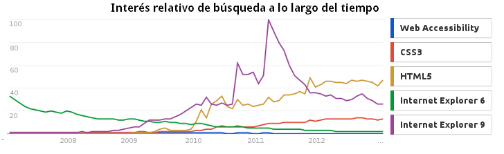

Acccesibilidad Web
Guía Práctica
Mini Charlas Tecnológicas @ UTN 2013
Pablo Botta
Algunos detalles para que me conozcan un poco mejor...
- Ingeniero en Sistemas de la UTN
- Desarrollador Web en Autologica
- Creador de Accesibilidad Web Argentina
- Colaborador en A11y Project
- Colaborador en Foros del Web
Accesibilidad Web
La accesibilidad Web significa que personas con algún tipo de discapacidad van a poder hacer uso de la Web. En concreto, al hablar de accesibilidad Web se está haciendo referencia a un diseño Web que va a permitir que estas personas puedan percibir, entender, navegar e interactuar con la Web, aportando a su vez contenidos a la misma.
Analogía para entender la
accesibilidad Web

En nuestro entorno cotidiano (la web) y a pesar de que las personas (usuarios) cuenten con herramientas, tales como una silla de ruedas, para disminuir sus dificultades (tecnologías de apoyo, por ejemplo un lector de pantalla) existen lugares públicos o privados (sitios web) que NO tienen las condiciones para recibirlos (Accesibilidad Web).
Discapacidad en números
Aproximadamente el 15% de la personas en el mundo están afectadas por algún tipo de discapacidad.
Fuente: World Report on Disability 2011 - OMS
En Argentina aproximadamente el 7.1% de la población sufre de algún tipo de discapacidad.
Fuente: Encuesta Nacional de Personas con Discapacidad 2002-2003. INDEC
¿Por qué no se desarrolla accesible?
(Opinión Personal)
La accesibilidad Web NO es una tendencia
Personas con discapacidad versus uso de IE 6 y 7 (combinado)
| Argentina | Mundial | |
|---|---|---|
| Internet Explorer 6 y 7 | 2.0% | 8.0% |
| Población con discapacidad | 7.1% | 15.0% |
Potencialmente se cree que no exite mucho público beneficiado por la Accesibilidad Web, además que no es tópico de gran debate en Internet.
Fuente: Net Market Share y Stats Counter
¿Por qué debería aplicarla entonces?

Imagen cortesía de Tsahi Levent-Levi